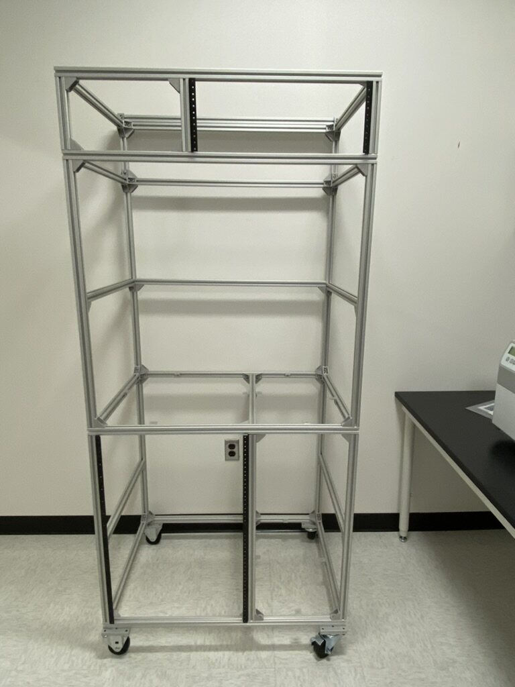
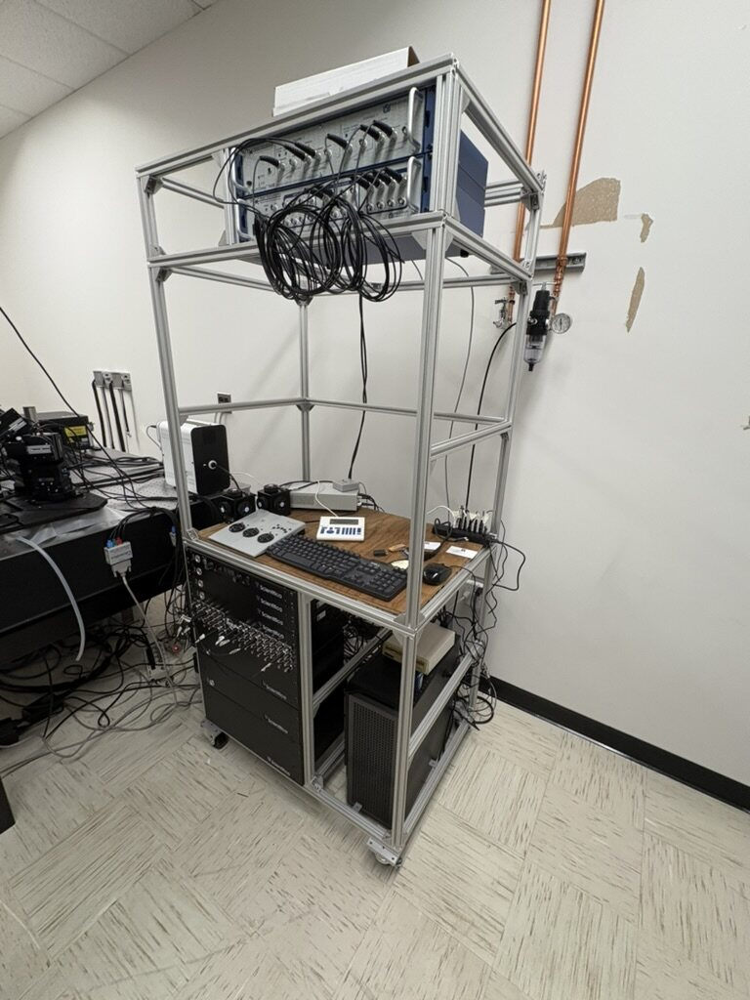
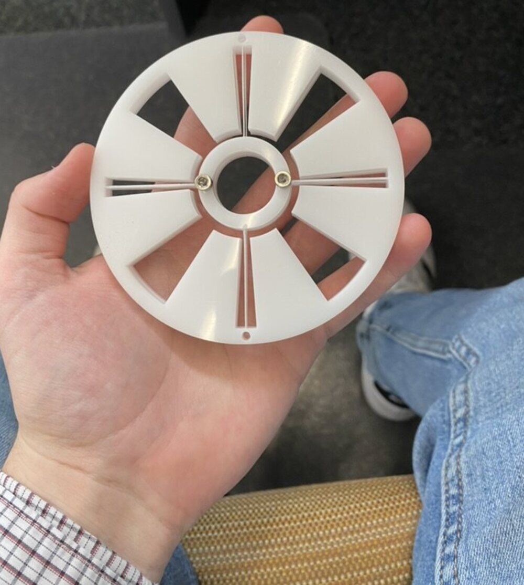
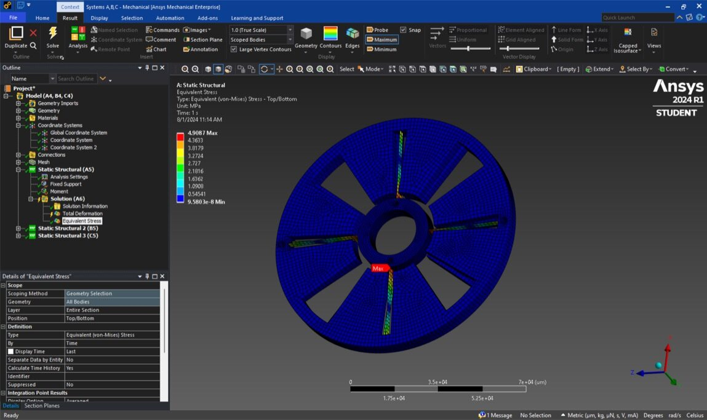
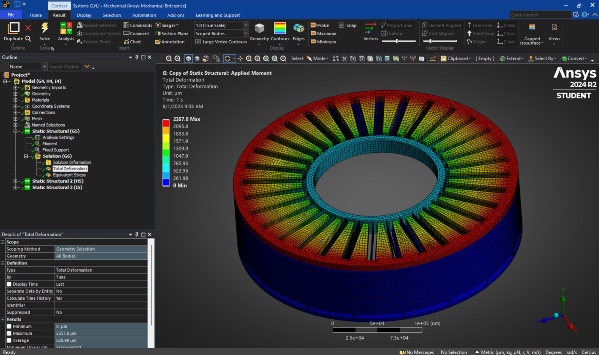
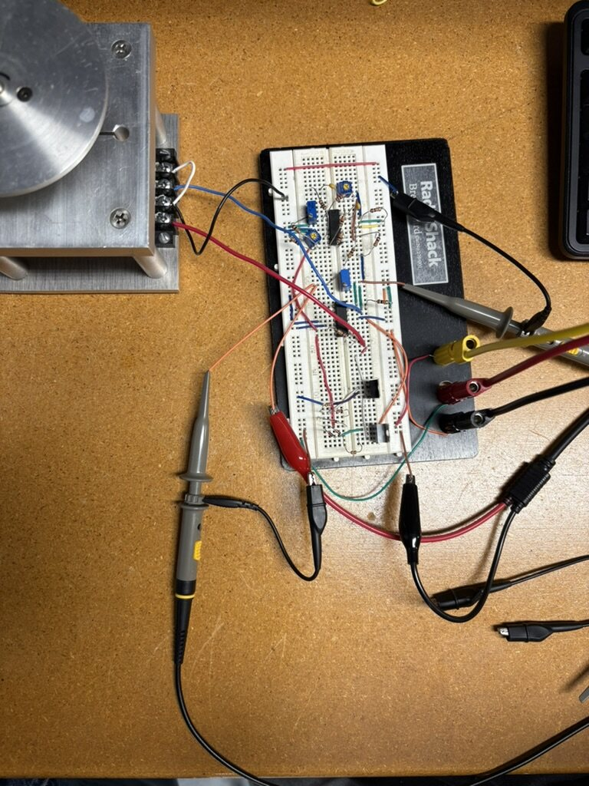
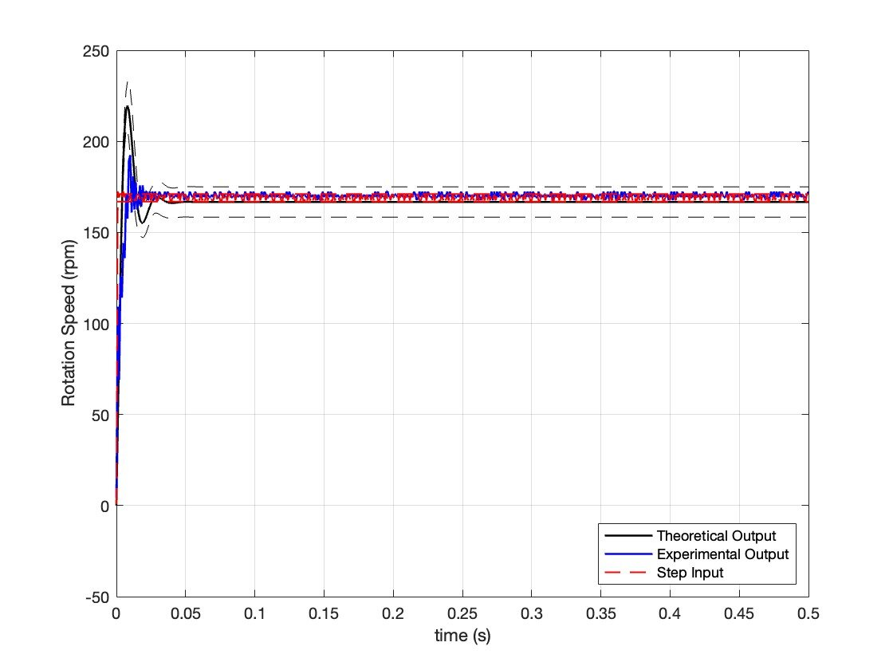
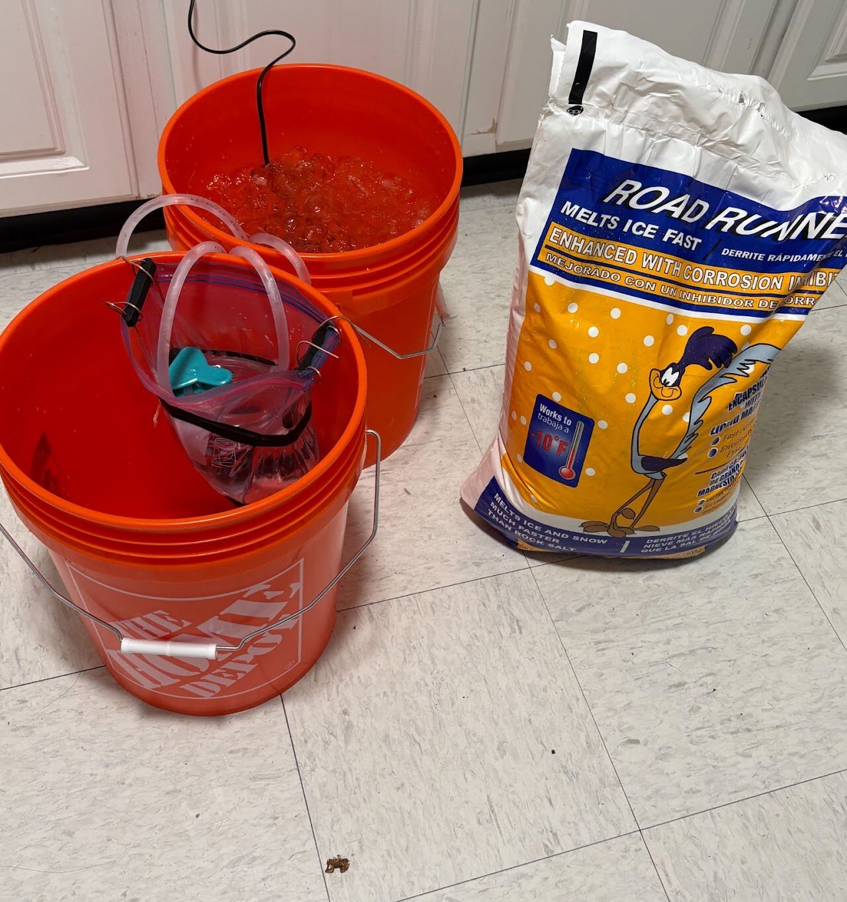
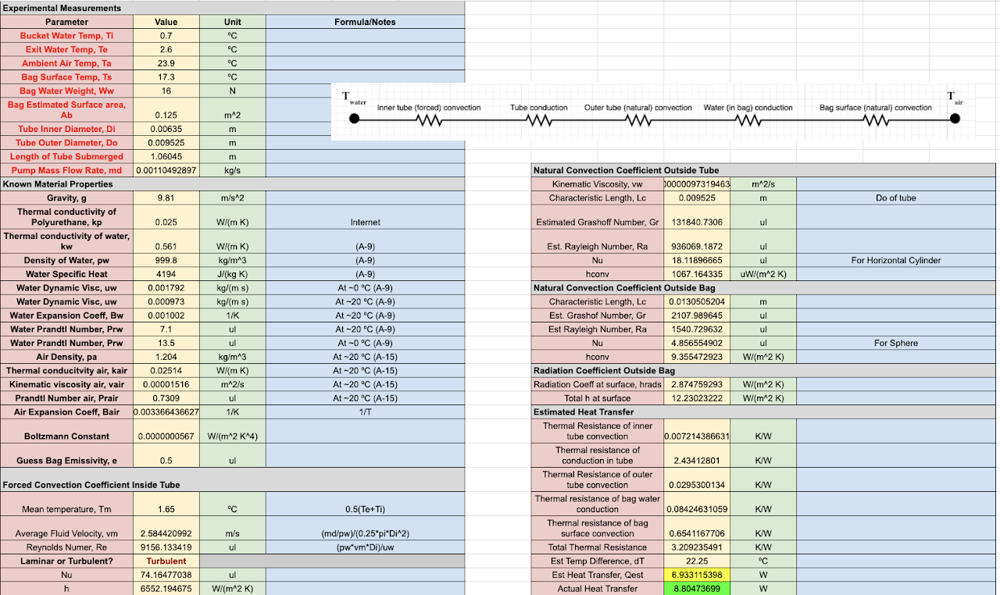

Smaller Projects
Four shorter write-ups: worth including for completeness, but not deep enough individually to warrant full case-study pages.
A custom 19" instrumentation rack designed in Inventor from off-the-shelf aluminum extrusion, rack rails, and casters, built to hold the electronics for a two-photon microscope build. Adding casters (most commercial racks don't have them) made it far easier to move in and out of the room, and the total cost came in at roughly $1,200 in parts, about 25% cheaper than commercial alternatives, which also lacked the casters and custom mounting rails.


A conceptual design and proof-of-concept prototype for a high-precision, flexure-based rotation stage intended for in-vacuum X-ray laminography, a next-generation microchip imaging application requiring ultra-high rotational concentricity without sliding contacts. FEA in Ansys predicted sub-3 nm runout in the sensitive direction before committing to the flexure geometry.



A physical breadboard implementation of a PID controller for DC motor speed control, built around an op-amp circuit rather than a digital microcontroller. Theoretical and experimental step responses tracked closely against each other, validating the analog design against the same theory used in the digital controllers on the Robotics page.


A small-team final project analyzing heat transfer from a prototype "veined" fin, modeled loosely on stegosaurus plates, which are hypothesized to have served a thermoregulatory function. Using a thermal circuit diagram, free/forced convection coefficient correlations, and conservation of energy, the team predicted total heat transfer within 22% of the experimental result.

